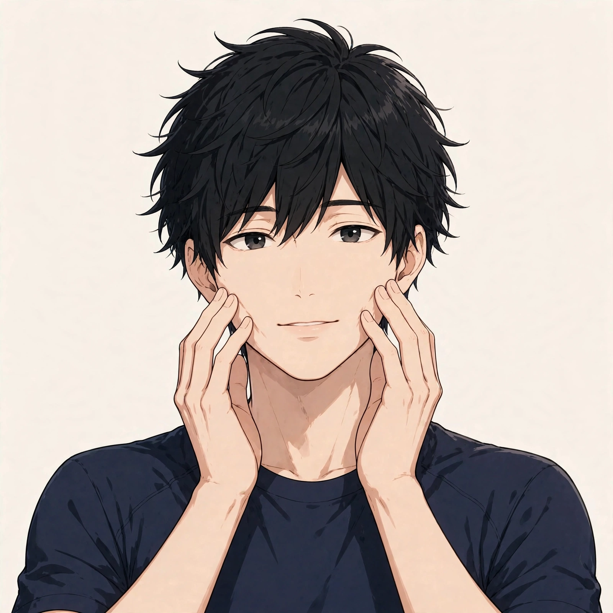

東三国で気になる顔のむくみ感
男性の考えられる要因とセルフケア、受診の目安

「朝、鏡を見ると顔全体が腫れぼったくて、まぶたが重く感じる」「前の晩に外食や飲み会があった翌朝は、昼を過ぎても頬や目の下の重さが残る感じがする」。東三国や新大阪、淀川区周辺で働く男性から、顔のむくみ感にまつわるこうした声を聞くことがあります。顔のむくみ感の感じ方や背景は人によって異なり、一つの原因だけで説明できるものではありません。この記事では原因を断定するのではなく、顔のむくみ感についての一般的な考え方と、考えられる要因、日常で試せるセルフケア、医療機関に相談したほうがよい目安をまとめます。夕方に脚に出やすいむくみ感を扱った脚のむくみ感についてのコラムとは出やすい時間帯や場面を分け、ここでは「顔」――とくに朝の場面に焦点を当てます。お悩み別のページでも顔のむくみ感としてまとめています。
顔のむくみ感とは：朝に感じやすく、時間とともに変わりやすい腫れぼったさ
「顔のむくみ感」は正式な病名ではなく、顔が腫れぼったい、重く感じる、普段より輪郭がぼやけて見える、といった状態を指して使われることが多い言葉です。一般に、むくみは体内の水分バランスの変化によって、皮膚の下に水分がとどまったように感じられる状態を指します。顔は、横になって眠るあいだに水分が頭の側へ寄りやすいことや、皮膚が薄く変化が目立ちやすいことから、朝の起き抜けに感じやすい部位とされています。起きて体を起こして過ごすうちに、徐々に気にならなくなる方もいます。まずは「朝と夕方で感じ方がどう違うか」「左右で違いがあるか」「どんな日の翌朝に強く感じるか（外食の翌日、睡眠が短い日など）」を自分の言葉で整理しておくと、セルフケアの選び方や、専門家に相談するときの伝え方がスムーズになります。
考えられる要因の整理
顔のむくみ感を意識する背景には、前日の食事や飲酒、睡眠の取り方、首まわりの緊張など、いくつかの要因が重なっている場合があります。以下は代表的なものとして挙げられる要因ですが、当てはまるかどうかや程度は人によって異なります。
顔と首まわりの筋肉の位置は、図1のとおりです。
表情筋は顔の表面を覆う薄い筋肉の総称、咬筋は頬の外側の噛む筋肉です。胸鎖乳突筋は首の前側の筋肉で、顔からの巡りの通り道にあたります。位置は目安として示しています。
- 塩分の多い食事や外食の機会：塩分を多く摂る食生活では、体が水分を抱え込みやすい状態になるとされ、翌朝の顔の腫れぼったさとして自覚される場合があります。外食や味の濃い食事が続いた日の翌朝に感じやすい、と話す方もいます。
- 飲酒と、その後の水分の摂り方：飲酒の翌朝に顔のむくみ感を覚える方は少なくありません。アルコールの代謝や、その後の水分補給の仕方が関わる場合がある、とされています。
- 眠る姿勢と睡眠時間：うつ伏せや横向きなど顔が下を向く姿勢で長く眠る、枕が低い・高いなど頭の位置の条件が重なると、朝の顔にむくみ感が出やすい場合があります。睡眠そのものが短い日が続くと、全身の疲労感とあわせて意識しやすい、と話す方もいます。
- うつむき姿勢と首まわりの緊張：デスクワークやスマートフォンを見る姿勢など、うつむく時間が長い生活では、首まわりの筋肉の緊張が続き、顔まわりの重さとして感じられる場合があります。
- 食いしばりや歯ぎしりによる咬筋の緊張：寝ているあいだの食いしばりや、集中しているときの噛みしめで頬の外側の筋肉（咬筋）に力が入り続けると、頬まわりの張りや重さとして自覚される場合があります。
- 運動量の少なさや、入浴で温まる機会の少なさ：体を動かす機会が少ない日や、シャワーだけで済ませる日が続くと、全身の巡りの面からも、朝の重さを感じやすい、と話す方もいます。
- 季節や気温・湿度の変化：季節の変わり目の寒暖差や、冷房の効いた室内で長く過ごすことなどが重なると、顔まわりの重さを意識しやすい場合があります。
日常で取り入れられるセルフケア
朝の起き抜けや、仕事の合間に試せるものを中心にまとめました。顔の皮膚は薄くデリケートです。強くこすったり強く押したりはせず、痛みや違和感があるときは無理をしないでください。気になる症状が強いときは、セルフケアより先に医療機関への相談をご検討ください。
- 朝の洗顔で温かさを意識する：起き抜けの洗顔は、冷たい水だけでなくぬるま湯も取り入れ、顔まわりをやさしく温める意識で行う方もいます。ゴシゴシこすらず、泡や手のひらで包むように洗うのが基本です。
- 首まわりをゆっくり動かす：首を前後左右へゆっくり倒す、肩をすくめてストンと落とすなど、首と肩まわりを動かす短い動きです。うつむき姿勢が続いた日の合間にも取り入れる方がいます。
- 頬まわりを指の腹でやさしく押さえる：両手の指の腹を頬に当て、耳の前に向けて軽く押さえ、耳の下から首筋へなでるように手を動かすケアです。力を入れず、皮膚を引っぱらない範囲で行ってください（手順は図2）。
- 湯船に浸かって顔まわりまで温める：帰宅後はシャワーだけで済ませず、湯船に浸かって首や肩まわりまで温める時間を作る方もいます。温めたタオルを顔に当てる方法を取り入れる方もいます。
- 夕食の塩分と就寝前の飲酒を見直す：夕食の味付けを控えめにする、寝る直前の飲酒を控えるなど、前日の過ごし方を少し変えて様子を見る方法です。日中の水分補給をこまめに行うことも、あわせて意識する方がいます。
- 枕の高さと寝姿勢を見直す：頭が低すぎたり高すぎたりしない高さの枕を選ぶ、うつ伏せで顔を圧迫する姿勢が続かないよう意識するなど、眠る環境側の見直しです。
- 日中に歩く時間を作る：通勤や昼休みに歩く時間を少し増やすなど、全身を動かす機会を作る工夫です。長時間座りっぱなしの日は、1時間に一度は立ち上がることも意識する方がいます。
頬まわりのケアの手順の目安は、図2のとおりです。

①手を温めてから両手の指の腹を頬に当てる ②頬から耳の前へ向けて軽く押さえる ③耳の下から首筋を下へなでるように手を動かす、が基本の流れです。力を入れず、皮膚をこすらない範囲で行ってください。
セルフケアは一度に全部をやろうとせず、続けられそうなものを一つ選ぶところから始めるのがおすすめです。感じ方には個人差があり、前日の食事や睡眠、その日の仕事内容によっても変わりますので、無理のない範囲で行ってください。
医療機関への受診を考える目安
次のような様子がある場合は、セルフケアや当院でのケアの前に、内科や皮膚科、耳鼻咽喉科などの医療機関への相談をご検討ください。当院は医療機関ではなく、症状の診断や治療は行いません。顔のむくみの背景には、生活習慣以外の原因が関わる場合もあります。
- 左右どちらか片側だけが急に腫れた、皮膚の赤みや熱感、痛みを伴っている
- 唇や舌の腫れ、息苦しさや声のかすれを伴っている（早めの受診を）
- むくみが数週間以上続き、だんだん強くなっている、朝だけでなく一日中残る
- 体重の急な増減や、尿の量・泡立ちの変化など、体のほかの変化を伴っている
- 顔だけでなく、手や脚など全身にもむくみが広がってきている
- 発熱や強い倦怠感、動悸など、ほかの症状を伴っている
上記に当てはまらなくても、気になる症状が続くときは、早めに医療機関や専門家へ相談することが大切です。自己判断だけで様子を見続けないことも一つの目安になります。
北辰堂のご案内
北辰堂は、大阪市淀川区東三国二丁目にある男性専用の整体院です。施術歴30年の平賀伸人（鍼灸師・国家資格）が、整体とリラクゼーションを行います。当院では鍼灸施術は行いません。営業は平日・土曜17:00〜22:00、日曜10:00〜22:00の完全予約制です。顔や首まわりの重さが気になる方は、仕事帰りの平日夜や日曜の時間帯にご相談いただけます。プライバシーへの配慮のため、詳しい住所はご予約確定後にLINEでご案内します。
料金は60分 初回2,000円／2回目以降6,000円、90分 初回3,000円／2回目以降9,000円で、お支払いは現金のみです。施術を受けたからといって体の状態がどうなるかをお約束することはできませんが、その日の体の状態を確認しながら、首や肩まわりだけでなく姿勢全体の様子も見て、ゆっくり体を預けられる時間をご用意しています。前日の食事や睡眠など、日常で気になっていることも、カウンセリングの際にお聞かせください。気になるお悩みの例はお悩み別一覧にもまとめています。
コースの内容はメニュー・料金、施術者は施術者について、ご予約の流れは当日の流れとLINE予約の下書きづくり、場所についてはアクセスをご覧ください。あわせて脚のむくみ感についてのコラムや目の疲れ感についてのコラム、よくある質問もご参考ください。
ご予約・お問い合わせはLINE公式アカウント（北辰堂）で受け付けています。北辰堂は医療機関ではなく、診断・治療を行うものではありません。
ほかのコラム記事
関連するお悩みページ
ご予約・ご相談はLINEから
東三国・新大阪・淀川区周辺で、体のケアの相談先をお探しの方は、LINE公式アカウント（北辰堂）からお気軽にご連絡ください。現在の状態をお聞きしたうえで、施術の進め方をご案内します。
LINEで予約する